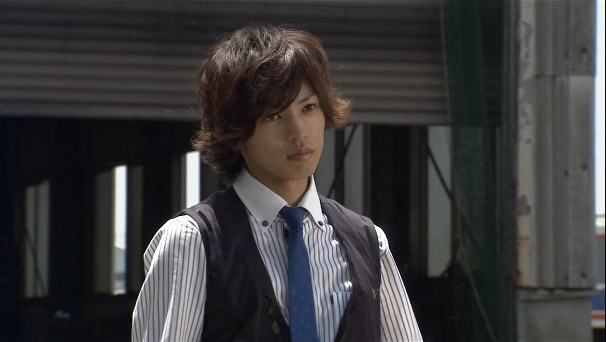

Futo (風都市, Fūto-shi), also known as the “Windy City,” is the main setting for Kamen Rider W. It’s an ecologically friendly city with windmills providing power and people living in harmony.
It's the home town of the detective Shotaro Hidari
Paragraph 3
Bing thinks that " Geographically, Futo is located right next to Tokyo", but that's with one u. Fuuto with two u's is fictional.
This textHere's a dog on a surfboard for no reason
For more information, Bing it.
Or check out the Fandom Wiki.
Created by: norrisa